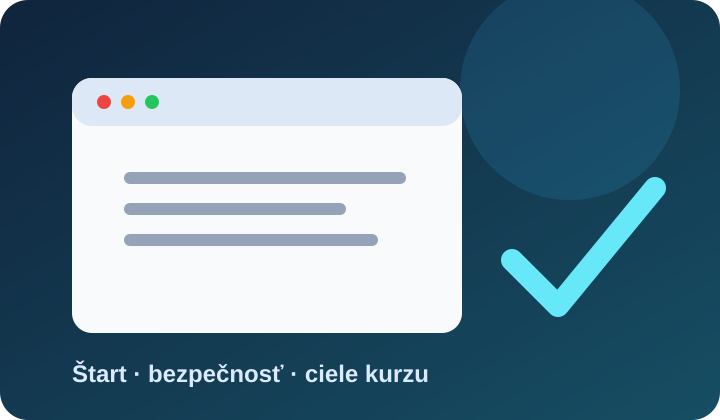
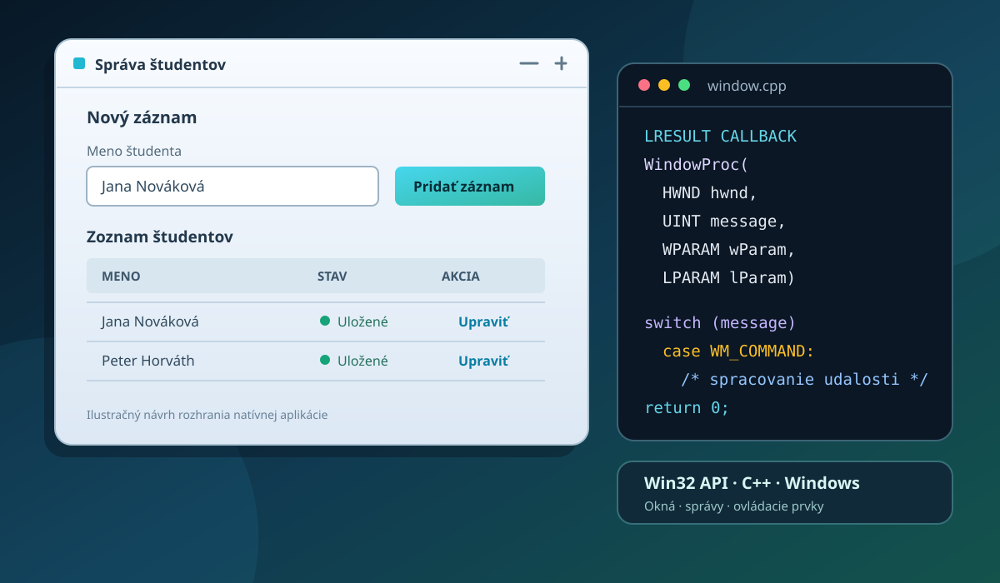

01 · Vstup do predmetu
2 vyučovacie hodiny
Materiály k tvorbe natívnych aplikácií pre Windows pomocou Win32 API doplníme postupne. Zatiaľ si môžete prezrieť rozpis prednášok a tematické náhľady.


2 vyučovacie hodiny

20 vyučovacích hodín

6 vyučovacích hodín

38 vyučovacích hodín